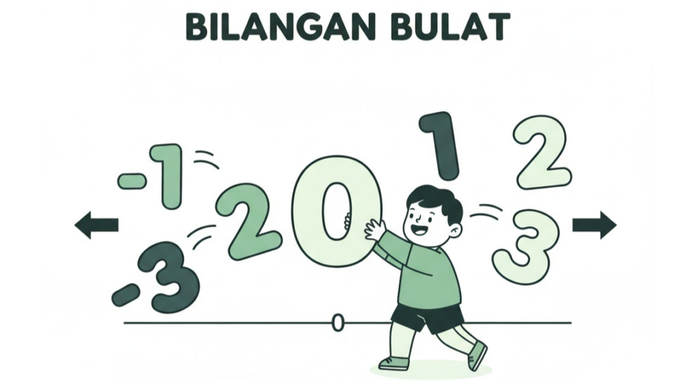
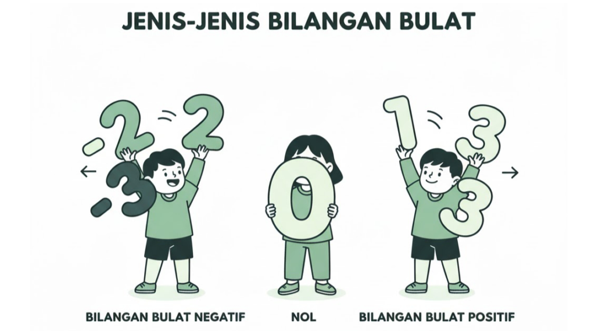
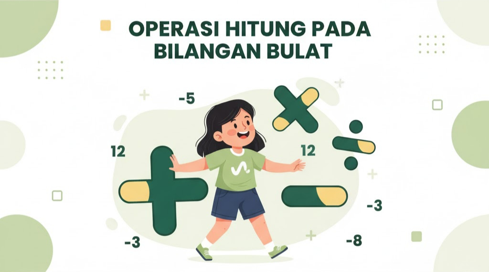
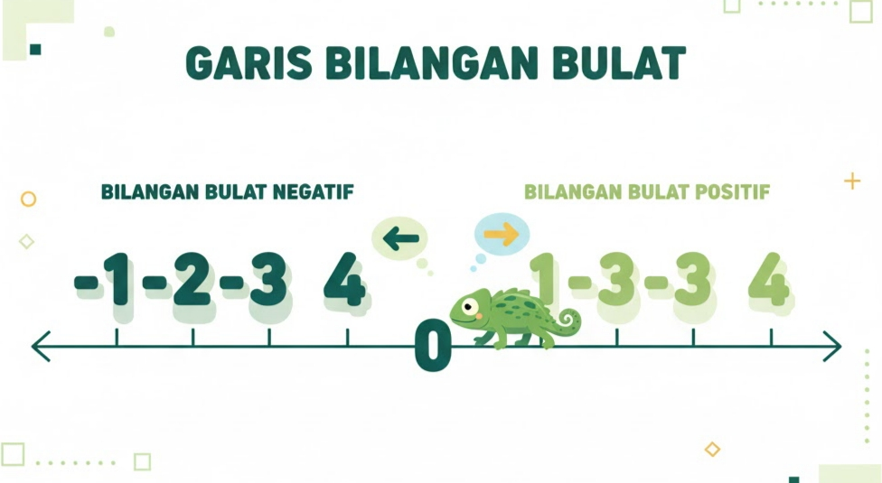

Pengertian Bilangan Bulat

Yuk, kenalan sama Bilangan Bulat!
Gampangnya, bilangan bulat itu adalah semua bilangan yang utuh, jadi bukan pecahan atau desimal. Bayangin aja semua bilangan cacah ditambah versi negatifnya, nah itulah bilangan bulat!
Contohnya seperti ini: ..., -5, -4, -3, -2, -1, 0, 1, 2, 3, 4, 5, ...
Penasaran nggak sih, siapa yang pertama kali kepikiran bilangan ini? Kenalin, namanya Leonardo da Pisa, seorang ahli matematika dari Italia yang keren banget, sampai-sampai lebih dikenal dengan nama Fibonacci.
Kerennya lagi, Fibonacci sudah nulis buku tentang perhitungan sejak umur 27 tahun! Siapa tahu, kamu adalah Fibonacci selanjutnya. Tertarik?
Kalau iya, tunjukkan semangat belajarmu, ya!
Jenis-jenis Bilangan Bulat

Bilangan bulat itu punya tiga anggota utama. Yuk, kita kenalan!
1. Bilangan Bulat Positif
Ini adalah semua bilangan yang ada di sebelah kanan angka nol. Semakin ke kanan, nilainya semakin besar!
Contoh: 1, 2, 3, 4, 10, 100, ... dan seterusnya.
2. Bilangan Bulat Negatif
Nah, ini kebalikannya. Mereka ada di sebelah kiri angka nol dan punya tanda minus (-). Awas, jangan terkecoh! Semakin besar angkanya, nilainya justru semakin kecil. Jadi, -5 itu lebih kecil dari -2, ya!
Contoh: ..., -100, -10, -5, -4, -3, -2, -1.
3. Nol (0)
Dia ini spesial, karena tidak positif dan tidak negatif. Angka 0 ini jadi pemisah antara bilangan positif dan negatif.
Jadi, di dalam keluarga besar Bilangan Bulat, ada juga anggota lain yang sering kita temui, seperti: Bilangan Cacah, Asli, Prima, Ganjil, dan Genap. Mereka semua bagian dari Bilangan Bulat, lho!
Operasi Hitung Pada Bilangan Bulat

Sama seperti bilangan lain, bilangan bulat juga bisa ditambah, dikurang, dikali, dan dibagi. Tapi, ada beberapa aturan main yang seru untuk diikuti. Yuk, kita bedah satu-satu!
1. Penjumlahan
Penjumlahan itu baik hati, aturannya gampang dan fleksibel.
Sifat Tukar Tempat (Komutatif)
Mau a + b atau b + a, hasilnya bakal sama saja!
Contoh: 6 + 7 itu sama aja kayak 7 + 6, hasilnya tetap 13.
Sifat Kelompok (Asosiatif)
Mau kerjain dari depan atau dari tengah, hasilnya tetap aman.
Mau kerjain dari depan atau dari tengah, hasilnya tetap aman.
Unsur Identitas
Setiap bilangan yang ditambah 0, ya hasilnya bilangan itu sendiri.
Contoh: 8 + 0 ya tetap 8.
2. Pengurangan
Pengurangan ini sedikit beda, aturannya unik!
a-b itu sama artinya dengan a+(-b).
Contoh: 12-20 sama dengan 12+(-20), hasilnya -8.
Kalau tanda kurang (-) ketemu sama bilangan negatif (-), mereka akan berubah jadi tambah (+)
Contoh: 1-(-2) berubah jadi 1+2, hasilnya 3. Keren, kan?
3. Perkalian
Perkalian punya aturan khusus soal tanda positif dan negatif. Gampang kok, inget aja ini:
Kalau tandanya sama, hasilnya pasti Positif (+).
positif dikali positif, hasilnya tetap positif.
Contoh: 2×3=6.
negatif dikali negatif, Hasilnya positif.
Contoh: (-2)×(-3)=6
Kalau tandanya beda, hasilnya sudah pasti negatif (-).
positif dikali negatif, jadinya negatif.
Contoh: 2×(-3)=-6
Sama seperti penjumlahan, perkalian juga punya sifat Tukar Tempat (komutatif) dan Kelompok (asosiatif). Jadi, mau dibolak-balik posisinya atau dikerjakan dari mana dulu, hasilnya akan tetap sama!
4. Pembagian
Kabar baik! Aturan main tanda untuk pembagian sama persis seperti perkalian. Tapi, ada beberapa hal penting yang harus kamu ingat!
Tidak Selalu Bulat
Hasil bagi bilangan bulat belum tentu bilangan bulat juga. Contohnya, 7 : 2 = 3,5, dan 3,5 itu bilangan desimal, bukan bulat.
Tidak Bisa Dibalik
Hati-hati, pembagian itu tidak adil. Hasil 6 : 3 beda jauh dengan 3 : 6.
Aturan Terpenting
Jangan pernah, sekali pun, membagi sebuah bilangan dengan angka nol (0)! Dalam matematika, membagi dengan nol itu tidak bisa dijelaskan (tidak terdefinisi) dan dianggap sebagai sebuah pelanggaran.
Garis Bilangan

Kalau kamu diminta mengurutkan beberapa bilangan bulat, senjata rahasiamu adalah garis bilangan.
Berdasarkan garis bilangan di atas, yang termasuk bilangan bulat negatif, yaitu semua bilangan bulat di sebelah kiri nol. Semakin ke kiri, nilai bilangannya semakin kecil. Sementara itu, yang termasuk bilangan bulat positif, yaitu semua bilangan bulat di sebelah kanan nol. Semakin ke kanan, nilai bilangannya semakin besar.